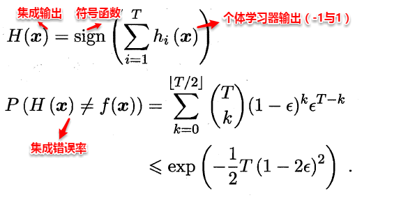
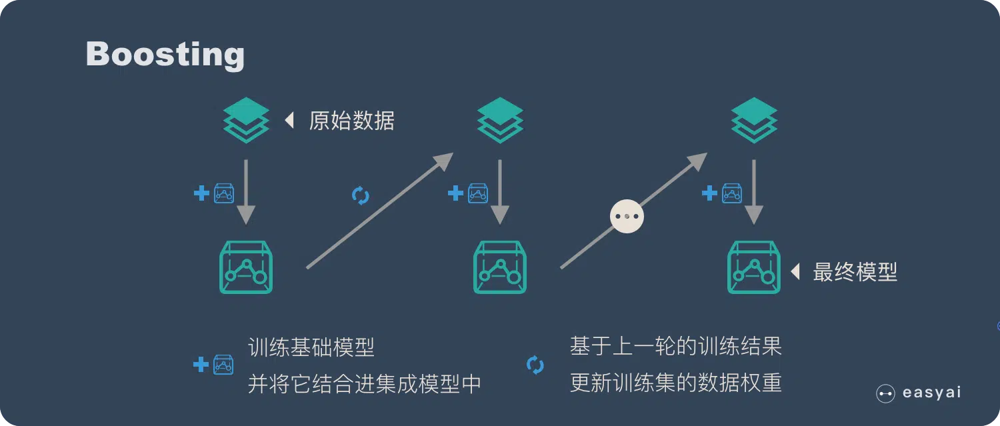
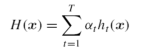
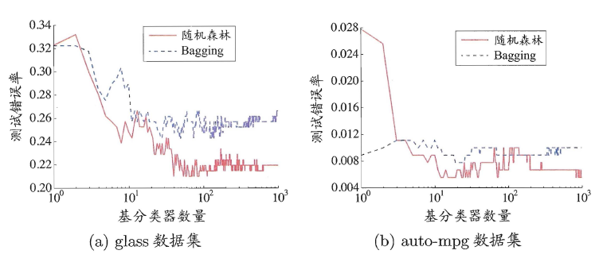
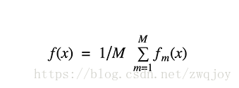
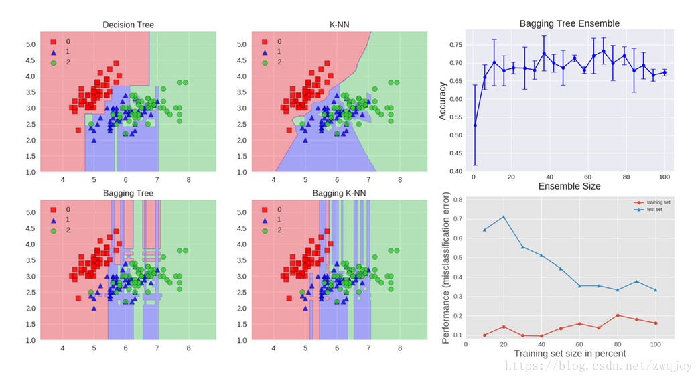

机器学习-集成学习
集成学习
传统机器学习算法 (例如：决策树，人工神经网络，支持向量机，朴素贝叶斯等) 的目标都是寻找一个最优分类器尽可能的将训练数据分开。集成学习 (
Ensemble Learning) 算法的基本思想就是将多个分类器组合，从而实现一个预测效果更好的集成分类器。集成算法可以说从一方面验证了中国的一句老话：三个臭皮匠，赛过诸葛亮。Thomas G. Dietterich 指出了集成算法在统计，计算和表示上的有效原因：
- 统计上的原因
一个学习算法可以理解为在一个假设空间 中选找到一个最好的假设。但是，当训练样本的数据量小到不够用来精确的学习到目标假设时，学习算法可以找到很多满足训练样本的分类器。所以，学习算法选择任何一个分类器都会面临一定错误分类的风险，因此将多个假设集成起来可以降低选择错误分类器的风险。
- 计算上的原因
很多学习算法在进行最优化搜索时很有可能陷入局部最优的错误中，因此对于学习算法而言很难得到一个全局最优的假设。事实上人工神经网络和决策树已经被证实为是一 个NP 问题。集成算法可以从多个起始点进行局部搜索，从而分散陷入局部最优的风险。
- 表示上的原因
在多数应用场景中，假设空间 中的任意一个假设都无法表示 (或近似表示) 真正的分类函数 。因此，对于不同的假设条件，通过加权的形式可以扩大假设空间，从而学习算法可以在一个无法表示或近似表示真正分类函数 的假设空间中找到一个逼近函数 的近似值。
集成学习（ensemble learning）通过构建并结合多个学习期来完成学习任务，有时也被称为多分类器系统（multi-classifier system）、基于委员会的学习（committee-based learning）等。
这一章的内容大致如下：
个体与集成：同质集成和异质集成有什么不同？集成学习对个体学习器有什么要求？集成学习研究的核心是什么？集成学习分哪两大类？
Boosting：Boosting的基本概念？AdaBoost算法的流程？如何基于加性模型最小化指数损失函数来推导？怎样处理基学习算法无法处理带权样本的情况？Boosting的优势是什么？Bagging与随机森林：Bagging算法如何获得各个基学习器的训练集？预测时如何进行结合？相比AdaBoost有什么优势？随机森林的核心思想是什么？相比Bagging有什么优势？结合策略：结合多个学习器有什么好处？平均法是怎样的？投票法是怎样的？学习法又是怎样的？
多样性：如何进行误差-分歧分解？说明了什么？有哪些多样性度量指标？有哪些增强多样性的手段？
个体与集成
集成学习先产生一组个体学习器（individual learner），再用某种策略将它们结合起来。
当所有个体学习器都由同样的学习算法生成时，也即集成中只包含同种类型的个体学习器时，称为同质（homogeneous）集成，这些个体学习器又被称为基学习器（base learner），相应的学习算法称为基学习算法（base learning algorithm）；
当个体学习器由不同的学习算法生成时，称为异质（heterogenous）集成，这些个体学习器称为**组件学习器（component learner）**或直接称为个体学习器。
集成学习通过结合多个学习器，通常能获得比单一学习器更优越的泛化性能，对弱学习器（weak learner）的提升尤为明显。注：弱学习器即略优于随机猜测的学习器，例如二分类任务中精度略高于50%。虽然理论上，集成弱学习器已经能获得很好的性能。但现实任务中，人们往往会使用比较强的学习器。
上面我们已经提到要让集成起来的泛化性能比单个学习器都要好，虽说团结力量大但也有木桶短板理论调皮捣蛋，那如何做到呢？这就引出了集成学习的两个重要概念：准确性和多样性（diversity）。准确性指的是个体学习器不能太差，要有一定的准确度；多样性则是个体学习器之间的输出要具有差异性。通过下面的这三个例子可以很容易看出这一点，准确度较高，差异度也较高，可以较好地提升集成性能。
现在考虑二分类的简单情形，假设基分类器之间相互独立（能提供较高的差异度），且错误率相等为 ε，则可以将集成器的预测看做一个伯努利实验，易知当所有基分类器中不足一半预测正确的情况下，集成器预测错误，所以集成器的错误率可以计算为：
此时，集成器错误率随着基分类器的个数的增加呈指数下降，但前提是基分类器之间相互独立，在实际情形中显然是不可能的，假设训练有A和B两个分类器，对于某个测试样本，显然满足：，因为A和B为了解决相同的问题而训练，因此在预测新样本时存在着很大的联系。因此，个体学习器的“准确性”和“差异性”本身就是一对矛盾的变量，准确性高意味着牺牲多样性，所以产生“好而不同”的个体学习器正是集成学习研究的核心。
当我们使用集成学习的时候，我们其实是希望不同的个体学习器产生互补的效果，使得某个学习器错误的地方能有机会被其他学习器纠正过来，这就要求个体学习器应该尽量“不同”，即具有多样性；同时我们希望这种互补不会把正确改为错误，这就要求个体学习器应该尽量“准确”。合起来就是集成学习研究的核心——如何产生并结合“好而不同”的个体学习器。
一般来说集成学习可以分为三大类：
- 用于减少方差的
bagging - 用于减少偏差的
boosting - 用于提升预测结果的
stacking
不过根据个体学习器的生成方式，集成学习方法大致可分为两个大类：
- 个体学习器间存在强依赖关系，必须串行生成的序列化方法，例如：
Boosting算法族； - 个体学习器间不存在强依赖关系，可同时生成的并行化方法，例如：
Bagging，随机森林；
对于三种常见的集成学习框架：bagging，boosting和stacking（上课只提到了前两个）。国内，南京大学的周志华教授对集成学习有很深入的研究，其在09年发表的一篇概述性论文《Ensemble Learning》对这三种集成学习框架有了明确的定义，概括如下：
bagging：从训练集从进行子抽样组成每个基模型所需要的子训练集，对所有基模型预测的结果进行综合产生最终的预测结果：
boosting：训练过程为阶梯状，基模型按次序一一进行训练（实现上可以做到并行），基模型的训练集按照某种策略每次都进行一定的转化。对所有基模型预测的结果进行线性综合产生最终的预测结果：
stacking：将训练好的所有基模型对训练基进行预测，第 个基模型对第 个训练样本的预测值将作为新的训练集中第 个样本的第 个特征值，最后基于新的训练集进行训练。同理，预测的过程也要先经过所有基模型的预测形成新的测试集，最后再对测试集进行预测：
有了这些基本概念之后，直觉将告诉我们，由于不再是单一的模型进行预测，所以模型有了“集思广益”的能力，也就不容易产生过拟合现象。
Boosting
Boosting是一种串行的工作机制，即个体学习器的训练存在依赖关系，必须一步一步序列化进行。其基本思想是：增加前一个基学习器在训练训练过程中预测错误样本的权重，使得后续基学习器更加关注这些打标错误的训练样本，尽可能纠正这些错误，一直向下串行直至产生需要的T个基学习器，Boosting最终对这T个学习器进行加权结合，产生学习器委员会。
Boosting 的核心思路是——挑选精英。
Boosting 和 bagging 最本质的差别在于他对基础模型不是一致对待的，而是经过不停的考验和筛选来挑选出“精英”，然后给精英更多的投票权，表现不好的基础模型则给较少的投票权，然后综合所有人的投票得到最终结果。
大部分情况下，经过 boosting 得到的结果偏差（bias）更小。
提升方法 (
boosting) 是一种常用的统计学习方法。在分类问题中，它通过改变训练样本的权重学习多个分类器，并将这些分类器们进行线性组合来提高分类的能力。提升方法的基本思想是：对于一个复杂任务来说，将多个专家的判断进行适当的综合所得出的判断，要比其中任何一个专家单独的判断要好。类似于” 三个臭皮匠顶一个诸葛亮 “。
提升方法的理论基础是：强可学习与弱可学习是等价的。
在概率近似正确（
probably approximately correct,PAC）学习的框架下：
- 强可学习：一个概念（或一个类别），若存在一个多项式的学习算法能够学习它并且正确率很高，那么称这个概念是强可学习的。
- 弱可学习：一个概念（或一个类别），若存在一个多项式的学习算法能够学习它，学习的正确率仅比随机猜测略好，那么称这个概念是弱可学习的。
可以证明：强可学习与弱可学习是等价的。
即：若在学习中发现了 ”弱学习算法 “，则可以通过某些办法将它提升为” 强学习算法“。
对于分类问题而言，求一个比较粗糙的分类规则（弱分类器）要比求精确的分类规则（强分类器）要容易得多。
Boosting就是一族可以将弱学习器提升为强学习器的算法。这族算法的工作原理类似：
- 先从初始训练集训练出一个基学习器。
- 再根据基学习器的表现对训练样本分布进行调整，使得先前基学习器做错的训练样本在后续受到更多关注。
- 然后基于调整后的样本分布来训练下一个基学习器。
- 如此重复，直到基学习器数量达到事先指定的值
M。- 最终将这
M个基学习器进行加权组合。
Boosting族算法最著名、使用最为广泛的就是AdaBoost，因此下面主要是对AdaBoost算法进行介绍。AdaBoost使用的是指数损失函数，因此AdaBoost的权值与样本分布的更新都是围绕着最小化指数损失函数进行的。看到这里回想一下之前的机器学习算法，不难发现机器学习的大部分带参模型只是改变了最优化目标中的损失函数：如果是Square loss，那就是最小二乘了；如果是Hinge Loss，那就是著名的SVM了；如果是log-Loss，那就是Logistic Regression了。
定义基学习器的集成为加权结合，则有：
AdaBoost算法的指数损失函数定义为：
具体说来，整个 Adaboost 迭代算法分为3步：
- 初始化训练数据的权值分布。如果有N个样本，则每一个训练样本最开始时都被赋予相同的权值：1/N。
- 训练弱分类器。具体训练过程中，如果某个样本点已经被准确地分类，那么在构造下一个训练集中，它的权值就被降低；相反，如果某个样本点没有被准确地分类，那么它的权值就得到提高。然后，权值更新过的样本集被用于训练下一个分类器，整个训练过程如此迭代地进行下去。
- 将各个训练得到的弱分类器组合成强分类器。各个弱分类器的训练过程结束后，加大分类误差率小的弱分类器的权重，使其在最终的分类函数中起着较大的决定作用，而降低分类误差率大的弱分类器的权重，使其在最终的分类函数中起着较小的决定作用。
整个AdaBoost的算法流程如下所示：
可以看出：AdaBoost的核心步骤就是计算基学习器权重和样本权重分布，那为何是上述的计算公式呢？这就涉及到了我们之前为什么说大部分带参机器学习算法只是改变了损失函数，就是因为大部分模型的参数都是通过最优化损失函数（可能还加个规则项）而计算（梯度下降，坐标下降等）得到，这里正是通过最优化指数损失函数从而得到这两个参数的计算公式，具体的推导过程此处不进行展开。但我们可以看到第一个分类器是用相等的权重系数进行训练的。在随后的boosting中，错分的数据权重系数将会增加，正确分类的数据权重系数将会减小。
此外AdaBoost算法每一轮都要判断当前基学习器是否满足条件，一旦条件不满足，则当前学习器被抛弃，且学习过程停止。
由于属于boosting算法族，采用的是加性模型，对每个基学习器的输出结果加权处理，只会得到一个输出预测结果。所以标准的AdaBoost只适用于二分类任务。
Boosting算法要求基学习器能对特定分布的数据进行学习，即每次都更新样本分布权重，这里书上提到了两种方法：“重赋权法”（re-weighting）和“重采样法”（re-sampling），书上的解释有些晦涩，这里进行展开一下：
重赋权法 : 对每个样本附加一个权重，这时涉及到样本属性与标签的计算，都需要乘上一个权值。
重采样法 : 对于一些无法接受带权样本的及学习算法，适合用“重采样法”进行处理。方法大致过程是，根据各个样本的权重，对训练数据进行重采样，初始时样本权重一样，每个样本被采样到的概率一致，每次从N个原始的训练样本中按照权重有放回采样N个样本作为训练集，然后计算训练集错误率，然后调整权重，重复采样，集成多个基学习器。
从偏差-方差分解来看：Boosting算法主要关注于降低偏差，每轮的迭代都关注于训练过程中预测错误的样本，将弱学习提升为强学习器。从AdaBoost的算法流程来看，标准的AdaBoost只适用于二分类问题。
Bagging与Random Forest
相比之下，Bagging与随机森林算法就简洁了许多，上面已经提到产生“好而不同”的个体学习器是集成学习研究的核心，即在保证基学习器准确性的同时增加基学习器之间的多样性。而这两种算法的基本思想都是通过“自助采样”的方法来增加多样性。
Bagging
Bagging 的核心思路是——民主。
Bagging 的思路是所有基础模型都一致对待，每个基础模型 手里都只有一票。然后使用民主投票的方式得到最终的结果。
大部分情况下，经过 bagging 得到的结果方差（variance）更小。
Bagging直接基于自助采样法bootstrap sampling。自助采样法的步骤是：给定包含 个样本的数据集：
- 先随机取出一个样本放入采样集中，再把该样本放回原始数据集。
- 这样经过 次随机采样操作，得到包含 个样本的采样集。
初始训练集中有的样本在采样集中多次出现，有的则从未出现。一个样本始终不在采样集中出现的概率是 。
根据 ，因此初始训练集中约有 63.2% 的样本出现在了采样集中。
自助采样法给
Bagging算法带来了额外的优点：由于每个基学习器只用初始训练集中约 63.2% 的样本来训练，剩下的约 36.8% 的样本可用作验证集来对泛化性能进行包外估计。
Bagging的基本流程：
- 经过 轮自助采样，可以得到 个包含 个训练样本的采样集。
- 然后基于每个采样集训练出一个基学习器。
- 最后将这 个基学习器进行组合，得到集成模型。
在使用
Bagging学习器进行预测时：
- 分类任务采取简单投票法，取每个基学习器的预测类别的众数。
- 回归任务使用简单平均法，取每个基学习器的预测值的平均。
从
偏差-方差分解的角度来看：
Bagging主要关注降低方差，它能平滑强学习器的方差。因此它在非剪枝决策树、神经网络等容易受到样本扰动的学习器上效果更为明显。
Boosting主要关注降低偏差，它能将一些弱学习器提升为强学习器。因此它在
SVM、knn等不容易受到样本扰动的学习器上效果更为明显。
具体过程：
- 从原始样本集中抽取训练集。每轮从原始样本集中使用
Bootstraping的方法抽取 个训练样本（在训练集中，有些样本可能被多次抽取到，而有些样本可能一次都没有被抽中）。共进行 轮抽取，得到 个训练集。（ 个训练集之间是相互独立的） - 每次使用一个训练集得到一个模型， 个训练集共得到 个模型。（注：这里并没有具体的分类算法或回归方法，我们可以根据具体问题采用不同的分类或回归方法，如决策树、感知器等）
- 对分类问题：将上步得到的 个模型采用投票的方式得到分类结果；对回归问题，计算上述模型的均值作为最后的结果。（所有模型的重要性相同）
Bagging 是一种并行式的集成学习方法，即基学习器的训练之间没有前后顺序可以同时进行，Bagging 使用“有放回”采样的方式选取训练集，对于包含 个样本的训练集，进行 次有放回的随机采样操作，从而得到 个样本的采样集，这样训练集中有接近36.8%的样本没有被采到。按照相同的方式重复进行，我们就可以采集到 个包含 个样本的数据集，从而训练出 个基学习器，最终对这 个基学习器的输出进行结合。
Bagging算法的流程如下所示：
可以看出Bagging主要通过样本的扰动来增加基学习器之间的多样性，因此Bagging的基学习器应为那些对训练集十分敏感的不稳定学习算法，例如：神经网络与决策树等。从偏差-方差分解来看，Bagging算法主要关注于降低方差，即通过多次重复训练提高稳定性。不同于AdaBoost的是，Bagging可以十分简单地移植到多分类、回归等问题。总的说起来则是：AdaBoost关注于降低偏差，而Bagging关注于降低方差。
随机森林
随机森林（Random Forest）是Bagging的一个拓展体，它的基学习器固定为决策树，多棵树也就组成了森林，而“随机”则在于选择划分属性的随机，随机森林在训练基学习器时，也采用有放回采样的方式添加样本扰动，同时它还引入了一种属性扰动，即在基决策树的训练过程中，在选择划分属性时，RF先从候选属性集中随机挑选出一个包含 个属性的子集，再从这个子集中选择最优划分属性，一般推荐 。
随机森林
Random Forest:RF是Bagging的一个扩展变体。随机森林对
Bagging做了小改动：
Bagging中基学习器的 “多样性” 来自于样本扰动。样本扰动来自于对初始训练集的随机采样。随机森林中的基学习器的多样性不仅来自样本扰动，还来自属性扰动。
这就是使得最终集成的泛化性能可以通过个体学习器之间差异度的增加而进一步提升。
随机森林在以决策树为基学习器构建
Bagging集成模型的基础上，进一步在决策树的训练过程中引入了随机属性选择。
传统决策树在选择划分属性时，是在当前结点的属性集合（假定有 个属性）中选择一个最优属性。
随机森林中，对基决策树的每个结点，先从该结点的属性集合中随机选择一个包含 个属性的子集，然后再从这个子集中选择一个最优属性用于划分。
- 如果 ，则基决策树的构建与传统决策树相同。
- 如果 ，则随机选择一个属性用于划分。
- 通常建议 。
随机森林的优点：
- 训练效率较高。因为随机森林使用的决策树只需要考虑所有属性的一个子集。
- 随机森林简单、容易实现、计算开销小。
- 随机森林在很多现实任务中展现出强大的性能，被称作 “代表集成学习技术水平的方法”。
随着树的数量的增加，随机森林可以有效缓解过拟合。因为随着树的数量增加，模型的方差会显著降低。
但是树的数量增加并不会纠正偏差，因此随机森林还是会有过拟合。
这样随机森林中基学习器的多样性不仅来自样本扰动，还来自属性扰动，从而进一步提升了基学习器之间的差异度。相比决策树的Bagging集成，随机森林的起始性能较差（由于属性扰动，基决策树的准确度有所下降），但随着基学习器数目的增多，随机森林往往会收敛到更低的泛化误差。同时不同于Bagging中决策树从所有属性集中选择最优划分属性，随机森林只在属性集的一个子集中选择划分属性，因此训练效率更高。
在随机森林中，每个树模型都是装袋采样训练的。另外，特征也是随机选择的，最后对于训练好的树也是随机选择的。
这种处理的结果是随机森林的偏差增加的很少，而由于弱相关树模型的平均，方差也得以降低，最终得到一个方差小，偏差也小的模型。

在一个极端的随机树算法中，随机应用的更为彻底：训练集分割的阈值也是随机的，即每次划分得到的训练集是不一样的。这样通常能够进一步减少方差，但是会带来偏差的轻微增加。
下面通过应用Iris数据集的分类问题来距离说明bagging。
我们可以使用两种基础模型：决策树和KNN。图中展示了基础模型与集成模型学习得到的决策边界。
Accuracy: 0.63 (+/- 0.02) [Decision Tree] Accuracy: 0.64 (+/- 0.01) [Bagging Tree]
Accuracy: 0.70 (+/- 0.02) [K-NN] Accuracy: 0.59 (+/- 0.07) [Bagging K-NN]
决策树学到的是轴平行边界，然而k=1最近邻对数据拟合的最好。bagging通过训练10个基础模型能过随机选择80%的数据作为训练集，同样随机选择80%的特征进行训练。
决策树bagging集成相比K-NN bagging集成获得了更高的准确率。K-NN对于训练样本的扰动并不敏感，这也是为什么K-NN成为稳定学习器的原因。
整合稳定学习器对于提升泛化性能没有帮助。
图像结果同样展示了通过增加集成模型的个数带来的测试准确率变化。基于交叉验证的结果，我们可以看到整合基础模型个数大于10个之后性能就基本不再提升了，只是带来了计算复杂度的增加。
最后一张图绘制的是集成学习模型的学习曲线，注意训练集数据的平均误差为0.3，在对训练集做80%采样的时候训练集和验证集误差最小。
Bagging 和 Boosting 的 4 点差别
样本选择上：
Bagging：训练集是在原始集中有放回选取的，从原始集中选出的各轮训练集之间是独立的。
Boosting：每一轮的训练集不变，只是训练集中每个样例在分类器中的权重发生变化。而权值是根据上一轮的分类结果进行调整。
样例权重：
Bagging：使用均匀取样，每个样例的权重相等
Boosting：根据错误率不断调整样例的权值，错误率越大则权重越大。
预测函数：
Bagging：所有预测函数的权重相等。
Boosting：每个弱分类器都有相应的权重，对于分类误差小的分类器会有更大的权重。
并行计算：
Bagging：各个预测函数可以并行生成
Boosting：各个预测函数只能顺序生成，因为后一个模型参数需要前一轮模型的结果。
差别部分内容转自《Bagging和Boosting 概念及区别》
结合策略
结合策略指的是在训练好基学习器后，如何将这些基学习器的输出结合起来产生集成模型的最终输出，下面将介绍一些常用的结合策略：
平均法（回归问题）
平均法通常用于回归任务中。
简单平均法： 。
加权平均法：
其中学习器 的权重 是从训练数据中学的。
现实任务中训练样本通常不充分或者存在噪声，这就使得学得的权重不完全可靠。尤其是对于规模比较大的集成学习，要学习的权重比较多，很容易出现过拟合。
因此实验和应用均显示出，加权平均法不一定优于简单平均法。
通常如果个体学习器性能相差较大时，适合使用加权平均法；个体学习器性能相差较近时，适合使用简单平均法。
易知简单平均法是加权平均法的一种特例，加权平均法可以认为是集成学习研究的基本出发点。由于各个基学习器的权值在训练中得出，一般而言，在个体学习器性能相差较大时宜使用加权平均法，在个体学习器性能相差较小时宜使用简单平均法。
投票法（分类问题）
投票法通常用于分类任务中。
绝大多数投票法：若某个标记得票数过半，则预测为该标记；否则拒绝预测。
此时很有可能所有标记都未过半，则预测失败。因此这种方法比较少用。
相对多数投票法：选取得票最多的标记作为预测值： 。
加权投票法：类似于加权平均法，其中学习器 的权重 是从训练数据中学的： 。
一些在产生类别标记的同时也生成置信度的学习器，置信度可转化为类概率使用，一般基于类概率进行结合往往比基于类标记进行结合的效果更好，需要注意的是对于异质集成，其类概率不能直接进行比较，此时需要将类概率转化为类标记输出，然后再投票。
学习法
学习法是一种更高级的结合策略，即学习出一种“投票”的学习器，Stacking是学习法的典型代表。Stacking的基本思想是：首先训练出T个基学习器，对于一个样本它们会产生T个输出，将这T个基学习器的输出与该样本的真实标记作为新的样本，m个样本就会产生一个m*T的样本集，来训练一个新的“投票”学习器。投票学习器的输入属性与学习算法对Stacking集成的泛化性能有很大的影响，书中已经提到：投票学习器采用类概率作为输入属性，选用多响应线性回归（MLR）一般会产生较好的效果。
学习法中，个体学习器的分类结果通过与另一个学习器来组合。
此时称个体学习器为初级学习器，用于组合的学习器称作次级学习器或者元学习器meta_learner。
学习法的典型代表就是stacking集成算法。stacking 集成算法中：
首先从初始数据集训练出初级学习器。
然后将初级学习器的预测结果作为一个新的数据集用于训练次级学习器。
在这个新数据集中，初级学习器的输出被当作样本输入特征；初始样本的标记仍被视作标记。
若直接使用初级学习器的输出来产生次级训练集，则容易发生过拟合。
一般是通过使用交叉验证，使用训练初级学习器时未使用的样本来产生次级学习器的训练样本。
次级学习器的输入属性表示和次级学习算法对stacking集成算法的泛化性能有很大影响。通常推荐：
- 次级学习器的输入特征是以初级学习器的输出类概率为特征。
- 次级学习算法采用多响应线性回归
Multi-response Linear Regression:MLR。
多样性（diversity）
在集成学习中，基学习器之间的多样性是影响集成器泛化性能的重要因素。因此增加多样性对于集成学习研究十分重要，一般的思路是在学习过程中引入随机性，常见的做法主要是对数据样本、输入属性、输出表示、算法参数进行扰动。
数据样本扰动，即利用具有差异的数据集来训练不同的基学习器。例如：有放回自助采样法，但此类做法只对那些不稳定学习算法十分有效，例如：决策树和神经网络等，训练集的稍微改变能导致学习器的显著变动。
输入属性扰动，即随机选取原空间的一个子空间来训练基学习器。例如：随机森林，从初始属性集中抽取子集，再基于每个子集来训练基学习器。但若训练集只包含少量属性，则不宜使用属性扰动。
输出表示扰动，此类做法可对训练样本的类标稍作变动，或对基学习器的输出进行转化。
算法参数扰动，通过随机设置不同的参数，例如：神经网络中，随机初始化权重与随机设置隐含层节点数。
参考
https://zhuanlan.zhihu.com/p/134089340
https://github.com/Vay-keen/Machine-learning-learning-notes
https://github.com/familyld/Machine_Learning
https://zhuanlan.zhihu.com/p/25994179
https://leovan.me/cn/2018/12/ensemble-learning/
https://easyai.tech/ai-definition/ensemble-learning/
https://zhuanlan.zhihu.com/p/72415675
https://www.zhihu.com/question/63492375
https://www.zhihu.com/question/27068705
https://www.zhihu.com/question/19725590/answer/241988854
https://tangshusen.me/2018/10/27/SVM/
https://www.joinquant.com/view/community/detail/a98b7021e7391c62f6369207242700b2
https://zhuanlan.zhihu.com/p/79531731
https://blog.csdn.net/zc02051126/article/details/49618633
https://zhuanlan.zhihu.com/p/127022333
https://0809zheng.github.io/2020/03/30/ridge.html
https://www.cnblogs.com/wuliytTaotao/p/10837533.html
https://link.springer.com/referenceworkentry/10.1007/978-1-4899-7687-1_910#Sec13186
http://palm.seu.edu.cn/zhangml/files/mla11-mll.pdf
https://blog.csdn.net/zwqjoy/article/details/80431496
https://ryuchen.club/posts/0x000034/ (推荐）
https://zhuanlan.zhihu.com/p/78798251
https://zhuanlan.zhihu.com/p/622244758
https://www.biaodianfu.com/hierarchical-clustering.html
https://zhuanlan.zhihu.com/p/411533418
https://zhuanlan.zhihu.com/p/33196506
https://www.cnblogs.com/wry789/p/13125658.html
https://blog.csdn.net/qq_41485273/article/details/113178117
https://www.jianshu.com/p/7d4323c28716
http://lunarnai.cn/2019/01/02/watermelon-chap-13/
https://zhuanlan.zhihu.com/p/411533418
https://www.huaxiaozhuan.com/统计学习/chapters/12_semi_supervised.html
https://blog.csdn.net/tyh70537/article/details/80244490
https://zhuanlan.zhihu.com/p/37747650
https://blog.csdn.net/qq_40722827/article/details/104515955
https://www.cnblogs.com/dyl222/p/11055756.html
https://www.zhihu.com/tardis/zm/art/392908965
https://blog.csdn.net/j123kaishichufa/article/details/7679682
https://www.cnblogs.com/heaad/archive/2011/01/02/1924088.html
https://www.cnblogs.com/stevenlk/p/6543628.html
等等